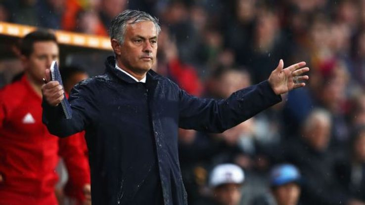
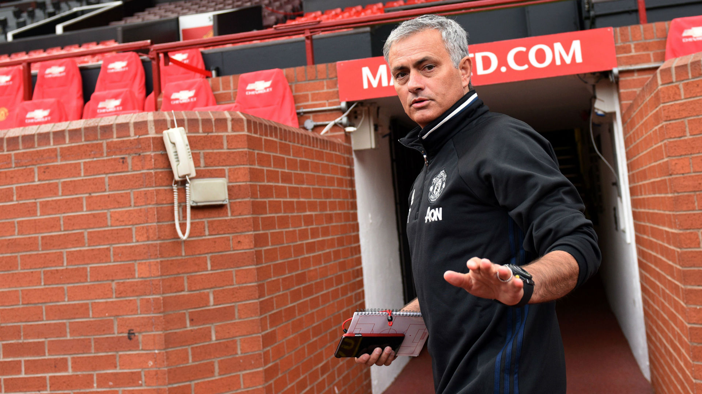

Match & Player news
 10/12/2016 10:24, Report by Ivan Spasov
Mourinho pleased with Europa League win
Jose Mourinho was naturally delighted to see his Manchester United side run out 2-0 winners over Zorya Luhansk on Thursday, praising the Reds for a "dominant" display.
Henrikh Mkhitaryan broke the deadlock just after the break, opening his account for the club with a fine run and finish, before Zlatan Ibrahimovic clinched the victory late on.
Here are the main points from Mourinho's post-match press conference in Odessa, after United sealed progression to the knockout stages of the Europa League...
BOUNCING BACK"We played well tonight. One thing is to play badly and get bad results, which kills confidence and is more difficult to cope with. When you play well, you have to hope the results will come. The reality is nobody was better than us [in recent weeks], even though we had disappointing results. And in the players' brains, that plays a part."
ALWAYS IN CONTROL"We had the ball, we had the control, they were defensively good, they had a couple of occasions on the counter-attack and at a free-kick, but we were dominant and if you look at the numbers, we were the team to win. But yes, they were good enough to give us a difficult match."
TOUGH CONDITIONS"The pitch was better today than yesterday and was good enough to play football and we appreciate the effort that probably Chenomorets and Zorya together did to give us a good pitch to play football. There are no miracles with this cold weather so we appreciate the effort to give us a proper match."
CREDIT TO ZORYA"Honestly I think the coach is very good because the team is very well organised and the team, in spite of no victories. The group was very difficult with three very good teams, and they competed with them all. I did my homework and analysed their players and quality, and I can understand why they are third in the [Ukrainian] league. Hopefully, next season, they will be in the Europa League and have more experience, and my hope is that next time they can play really at home, even though this is a beautiful stadium."